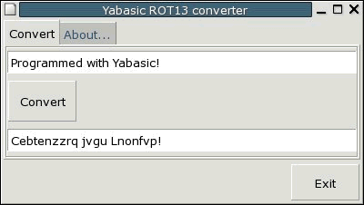
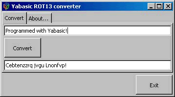

Merten Joost has written japi,
a library making the powerful graphics of Java available for users of other
languages e.g. C, Pascal, Fortran and Yabasic !
www.japi.de
Peter van Eerten has created the program GTK-Server, which
allows one to build a decent GUI for any yabasic-Program, using the
GTK widget set with Listboxes, Radiobuttons, Menus
and much more.
The GTK-Server uses the well known and featureful GTK-Library
(which is used for example to build the GUI of the GIMP) and communicates
with yabasic through standard pipes. It is known to work with yabasic under
Windows and Unix.
Peter van Eertens program may be used not only with yabasic but
with many scripting languages, enabling them all to built their GUI.
For details, descriptions and downloads, please visit:
http://www.gtk-server.org
For a quick overview, you may have a look at the Screenshots below for
Linux and Windows:
 
And here is the associated yabasic program:
#!/usr/local/bin/yabasic
REM Demoprogram for Yabasic with the GTK-server
REM Encode to and decode from ROT13
REM
REM Runs on both Linux and Windows
REM
REM (C) January 10, 2005 by Peter van Eerten
REM
REM Tested with Slackware Linux 10 and Win2000
REM Will not run on Win9x/ME!
REM ****************************************
REM Setup pipes
SUB SETUP()
os$ = PEEK$("os")
IF (os$ = "unix") THEN
SYSTEM("gtk-server fifo /tmp/yab.pipe &")
ELSE
SYSTEM("start gtk-server.exe fifo")
SLEEP 0.5
OPEN "\\\\.\\pipe\\out" FOR WRITING AS 1
SLEEP 0.5
OPEN "\\\\.\\pipe\\in" FOR READING AS 2
END IF
SLEEP 1
END SUB
REM ****************************************
REM Communication function using pipes
SUB GTK$(st$)
LOCAL tp$
IF (os$ = "unix") THEN
OPEN "/tmp/yab.pipe" FOR WRITING AS 1
PRINT #1 st$;
CLOSE 1
IF (st$ = "gtk_exit 0") THEN
SYSTEM("rm /tmp/yab.pipe")
ELSE
OPEN "/tmp/yab.pipe" FOR READING AS 1
LINE INPUT #1 tp$
CLOSE 1
END IF
ELSE
PRINT #1 st$;
LINE INPUT #2 tp$
IF (st$ = "gtk_exit 0") THEN
CLOSE 2
CLOSE 1
END IF
END IF
RETURN tp$
END SUB
REM ****************************************
REM Setup GUI with GTK-SERVER
SUB GUI()
REM First, initialize GTK
GTK$("gtk_init NULL NULL")
REM Create main window
win$ = GTK$("gtk_window_new 0")
GTK$("gtk_window_set_title " + win$ + " \"Yabasic ROT13 converter\"")
GTK$("gtk_window_set_default_size " + win$ + " 350 150")
GTK$("gtk_window_set_position " + win$ + " 1")
REM Create notebook
notebook$ = GTK$("gtk_notebook_new")
GTK$("gtk_notebook_set_tab_pos " + notebook$ + " 2")
REM Create EXIT button
myexit$ = GTK$("gtk_button_new_with_label Exit")
GTK$("gtk_widget_set_usize " + myexit$ + " 75 40")
REM Put on main window
vbox1$ = GTK$("gtk_vbox_new 0 3")
hbox1$ = GTK$("gtk_hbox_new 0 3")
GTK$("gtk_box_pack_end " + hbox1$ + " " + myexit$ + " 0 0 1")
GTK$("gtk_box_pack_start " + vbox1$ + " " + notebook$ + " 1 1 1")
GTK$("gtk_box_pack_start " + vbox1$ + " " + hbox1$ + " 1 1 1")
GTK$("gtk_container_add " + win$ + " " + vbox1$)
REM Define notebook pages
frame1$ = GTK$("gtk_frame_new NULL")
frame2$ = GTK$("gtk_frame_new NULL")
notelabel1$ = GTK$("gtk_label_new Convert")
notelabel2$ = GTK$("gtk_label_new About...")
REM Add the pages to the notebook
GTK$("gtk_notebook_insert_page " + notebook$ + " " + frame1$ + " " + notelabel1$ + " 1")
GTK$("gtk_notebook_insert_page " + notebook$ + " " + frame2$ + " " + notelabel2$ + " 2")
REM Create converter part
entry$ = GTK$("gtk_entry_new")
convert$ = GTK$("gtk_button_new_with_label Convert")
GTK$("gtk_widget_set_usize " + convert$ + " 75 40")
result$ = GTK$("gtk_entry_new")
REM Put it all on notebook page
vbox2$ = GTK$("gtk_vbox_new 0 3")
hbox2$ = GTK$("gtk_hbox_new 0 3")
GTK$("gtk_box_pack_start " + vbox2$ + " " + entry$ + " 1 1 1")
GTK$("gtk_box_pack_start " + hbox2$ + " " + convert$ + " 0 0 1")
GTK$("gtk_box_pack_start " + vbox2$ + " " + hbox2$ + " 1 1 1")
GTK$("gtk_box_pack_start " + vbox2$ + " " + result$ + " 1 1 1")
GTK$("gtk_container_add " + frame1$ + " " + vbox2$)
REM Create ABOUT part
ex$ = "This is a small and simple GTK-server demonstration with Yabasic."
ex$ = ex$ + " It will run both on Windows and Linux "
ex$ = ex$ + "without modifications on the source code.\n\n"
ex$ = ex$ + "This is Yabasic version " + STR$(peek("version")) + " with "
ex$ = ex$ + GTK$("gtk_server_version") + ".\n\n"
ex$ = ex$ + "For more information, please visit http://www.gtk-server.org!"
label$ = GTK$("gtk_label_new \"" + ex$ + "\"")
GTK$("gtk_label_set_line_wrap " + label$ + " 1")
GTK$("gtk_label_set_justify " + label$ + " 2")
GTK$("gtk_container_add " + frame2$ + " " + label$)
REM Show all widgets
GTK$("gtk_widget_show_all " + win$)
REM Get focus to input entry
GTK$("gtk_widget_grab_focus " + entry$)
END SUB
REM ****************************************
REM Get input and convert
SUB CONVERT()
LOCAL tmp$, i, c$
tmp$ = GTK$("gtk_entry_get_text " + entry$)
FOR i = 1 TO LEN(tmp$)
c$ = MID$(tmp$, i, 1)
IF (ASC(c$) >= 97 AND ASC(c$) <= 109) THEN
MID$(tmp$, i, 1) = CHR$(ASC(c$) + 13)
ELSEIF (ASC(c$) >= 110 AND ASC(c$) <= 122) THEN
MID$(tmp$, i, 1) = CHR$(ASC(c$) - 13)
ELSEIF (ASC(c$) >= 65 AND ASC(c$) <= 77) THEN
MID$(tmp$, i, 1) = CHR$(ASC(c$) + 13)
ELSEIF (ASC(c$) >= 78 AND ASC(c$) <= 90) THEN
MID$(tmp$, i, 1) = CHR$(ASC(c$) - 13)
END IF
NEXT i
REM Put in result entry
GTK$("gtk_entry_set_text " + result$ + " \"" + tmp$ + "\"")
GTK$("gtk_widget_grab_focus " + entry$)
END SUB
REM ****************************************
REM Main program starts here
SETUP()
GUI()
REPEAT
event$ = GTK$("gtk_server_callback wait")
IF (event$ = entry$ OR event$ = convert$) THEN
CONVERT()
END IF
UNTIL (event$ = myexit$ OR event$ = win$)
REM Exit GTK
GTK$("gtk_exit 0")
END
|
- Chipmunk
Basic is a free Basic interpreter offering a rich set of features and
language elements; it is especially strong on the Macintosh and the Palm
Pilot. Written by Ron Nicholson.
- wxBasic
is available for Windows and linux and offers great grafics and some
very interesting features.